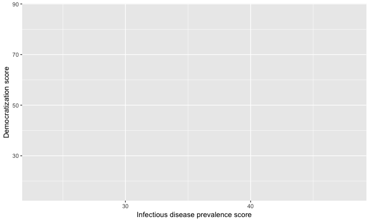
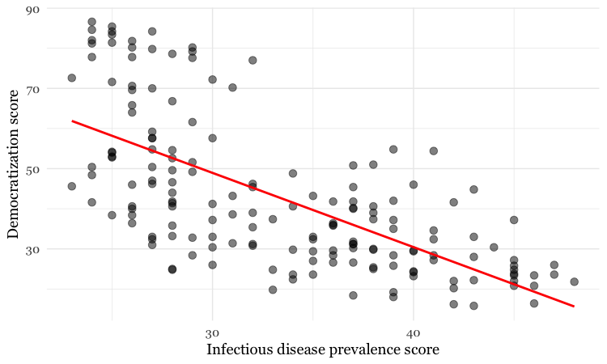
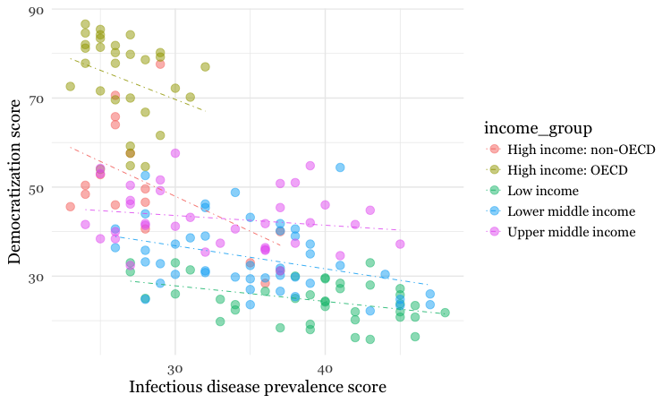
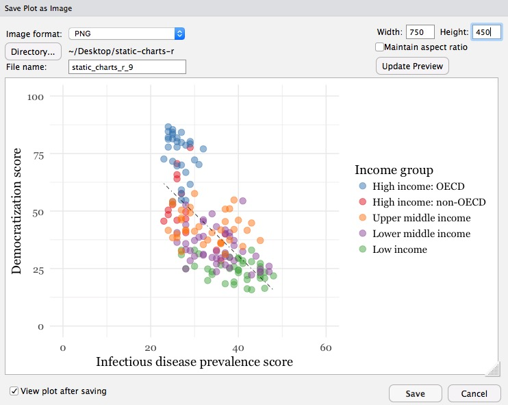
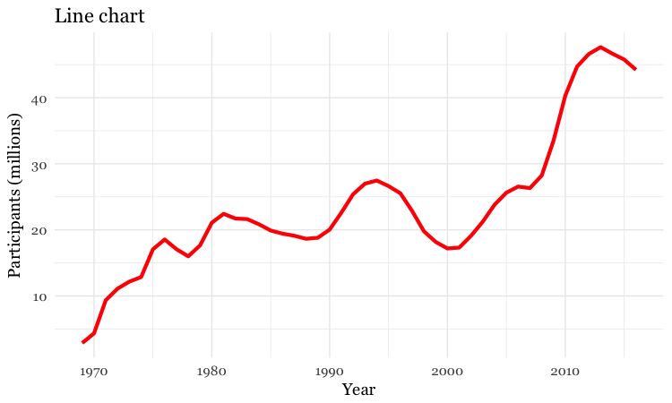
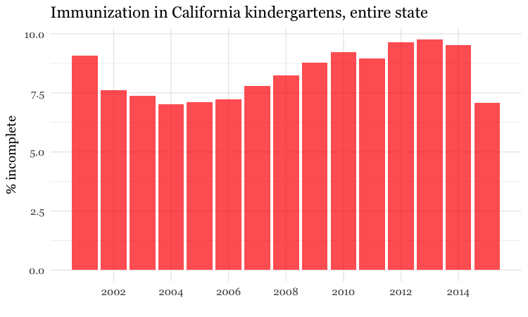
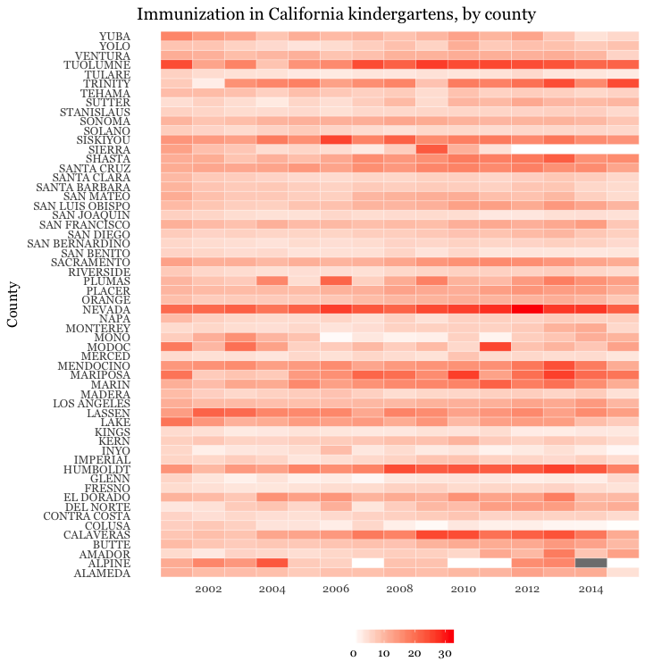

In today’s class, we will begin to explore how R can be used to make graphics from data, making customized static graphics with the ggplot2 package. This is part of the tidyverse, so you already have it installed from the previous class.
Download the data for this session from here, unzip the folder and place it on your desktop. It contains the following files:
disease_democ.csv Data illustrating a controversial theory suggesting that the emergence of democratic political systems has depended largely on nations having low rates of infectious disease. Contains the following variables:
country Country name.income_group World Bank income groups, explained here.democ_score Measure of the strength of democratic institutions in each country, from Democratization: A Comparative Analysis of 170 Countriesinfect_rate Historical prevalance of infectious disease, from the Global Infectious Diseases and Epidemiology Network.food_stamps.csv Contains the following variables:
year From 1969 to 2016.food_stamps Average number of people participating in the Supplemental Nutrition Assistance Program, in millions, from the US Department of Agriculture.poverty Estimated number of people in poverty, in millions, from the US Census Bureau.kindergarten.csv Data from the California Department of Public Health, documenting enrollment and the number of children with complete immunizations at entry into kindergartens in California from 2001 to 2015. Contains the following variables:
district School district.sch_code Unique identifying code for each school.pub_priv Whether school is public or private.school School name.enrollment Number of children enrolled.complete Number of children with complete immunizations.start_year Year of entry (for the 2015-2016 school year, for example, this would be 2015).nations.csv Data from the World Bank Indicators portal. Contains the following variables:
iso2c iso3c Two- and Three-letter codes for each country, assigned by the International Organization for Standardization.country Country name.year From 1990 to 2015.gdp_percap Gross Domestic Product per capita in current international dollars, corrected for purchasing power in different territories.life_expect Life expectancy at birth, in years.population Estimated total population at mid-year, including all residents apart from refugees.region income World Bank regions and income groups, explained here.co2_percap Carbon dioxide emissions per capita, in metric tonnes.The “gg” in ggplot2 stands for “grammar of graphics,” an approach to drawing charts devised by the statistician Leland Wilkinson. Rather than thinking in terms of finished charts like a scatter plot or a column chart, it starts by defining the coordinate system (usually the X and Y axes of a cartesian system), maps data onto those coordinates, and then adds layers such as points, bars and so on. This is the logic behind ggplot2 code.
Some key things to understand about ggplot2:
ggplot This is the master function that creates a ggplot2 chart.aes This function, named for “aesthetic mapping,” is used whenever data values are mapped onto a chart. So it is used when you define which variables are plotted onto the X and Y axes, and also if you want to change the size or color of parts of the chart according to values for a variable.geom All of the functions that add layers to a chart start with geom, followed by an underscore, for example geom_point or geom_bar. The code in the parentheses for any geom layer styles the items in that layer, and can include aes mappings of values from data.theme This function modifies the appearance of elements of a plot, used, for example, to set size and font face for text, the position of a legend, and so on.scale Functions that begin with scale, followed by an underscore, are used to modify the way an aes mapping of data appears on a chart. They can change the axis range, for example, or specify a color palette to be used to encode values in the data.+ is used each time you add a layer, a scale, a theme, or elements like axis labels and a title After a + you can continue on the same line of code or move the next line. I usually write a new line after each +, which makes the code easier to follow.As for the previous class, create a new R script, save it to the folder containing the data, and then set your working directory to the source file location. Then load the packages we will use today:
#load required packages
library(readr)
library(dplyr)
library(ggplot2)
We’ll start by making and modifying a scatter plot from the infectious disease and democracy data, which we first need to load into the environment.
# load disease and democracy data
disease_democ <- read_csv("disease_democ.csv")
Copy this code into your R script and run:
# map values in data to X and Y axes
ggplot(disease_democ, aes(x = infect_rate, y = democ_score))
The code within the parentheses for the ggplot function defines the data frame to be used, followed by the aes mapping of variables in the data to the chart’s X and Y axes.
The following chart should appear in the Plots panel at bottom right:
The axis ranges are automatically set to values in the data, but at this point there is just a blank chart grid, because we haven’t added any geom layers to the chart.
By default, the axis labels will be the names of the variables in the data. But it’s easy to customize, using the following code:
# customize axis labels
ggplot(disease_democ, aes(x = infect_rate, y = democ_score)) +
xlab("Infectious disease prevalence score") +
ylab("Democratization score")

The default gray theme of ggplot2 has a rather academic look. See here and here for how to use the theme option to customize individual elements of a chart. However, for my charts, I typically use one of the ggplot2 built-in themes, and then customize the fonts.
# Change the theme
ggplot(disease_democ, aes(x = infect_rate, y = democ_score)) +
xlab("Infectious disease prevalence score") +
ylab("Democratization score") +
theme_minimal(base_size = 14, base_family = "Georgia")

Notice how the base_family and base_size can be used with a built-in theme to change font face and size. R’s basic fonts are fairly limited (run names(postscriptFonts()) to view those available). However, you can use the extrafonts package to make other fonts available.
If you wish to develop your own customized theme, you can use this web app to select your theme options. When you are statisfied with the appearance of the chart in the app, click the R script for theme (run every R session) button to download your theme as an R script.
If you then load and run this script at the start of your R session, your ggplot2 charts for that session will use the downloaded theme.
You can save a ggplot2 chart as an object in your environment using the <- assignment operator. So we’ll do that here to save the basic template, with no geom layers.
# save chart template, and plot
disease_democ_chart <- ggplot(disease_democ, aes(x = infect_rate, y = democ_score)) +
xlab("Infectious disease prevalence score") +
ylab("Democratization score") +
theme_minimal(base_size = 14, base_family = "Georgia")
There should now be an object of type gg in your Environment called disease_democ_chart.
The plot function will plot a saved ggplot2 object.
# plot saved chart template
plot(disease_democ_chart)
This code will add a geom layer with points to the template:
# add a layer with points
disease_democ_chart +
geom_point()

This is exactly the same as running all the code saved in the gg object with the new line.
# themed scatterplot
ggplot(disease_democ, aes(x = infect_rate, y = democ_score)) +
xlab("Infectious disease prevalence score") +
ylab("Democratization score") +
theme_minimal(base_size = 14, base_family = "Georgia") +
geom_point()
# add a trend line
disease_democ_chart +
geom_point() +
geom_smooth()

By default, the geom_smooth function plots a curve through the data using a method called locally-weighted scatterplot smoothing, and adds a ribbon giving the standard error, a measure of uncertainty around the line of best fit through the data.
The following code modifies the two geom layers to change their appearance.
# customize the two geom layers
disease_democ_chart +
geom_point(size = 3, alpha = 0.5) +
geom_smooth(method = lm, se=FALSE, color = "red")

In the geom_point layer, we have increased the size of each point, and reduced its transparency using alpha.
In the geom_smooth function, we have changed the color of the line, removed the ribbon showing the se or “standard error,” a measure of the uncertainty surrounding the fit to the data, and changed the method used to fit the data to a linear regression, or linear model (lm).
When setting colors in ggplot2 you can use their R color names, or their HEX values. This code will produce the same result:
# customize the two geom layers
disease_democ_chart +
geom_point(size = 3, alpha = 0.5) +
geom_smooth(method = lm, se=FALSE, color = "#FF0000")
Until you are familiar with the options for each geom, you will need to look up how to change the appearance of each layer: Follow the links for each geom from here.
The following code customizes the trend line further, and includes an aes mapping to set the color of the points so that they reflect the categorical variable of World Bank income_group.
# customize again, coloring the points by income group
disease_democ_chart +
geom_point(size = 3, alpha = 0.5, aes(color = income_group)) +
geom_smooth(method = lm, se = FALSE, color = "black", linetype = "dotdash", size = 0.3)

Notice how the aes function colors the points by values in the data, rather than setting them to a single color. ggplot2 recognizes that income_group is a categorical variable, and uses its default qualitative color palette.
Now run this code, to see the different effect of setting the aes color mapping for the entire chart, rather than just one geom layer.
# color the entire chart by income group
ggplot(disease_democ, aes(x = infect_rate, y = democ_score, color=income_group)) +
xlab("Infectious disease prevalence score") +
ylab("Democratization score") +
theme_minimal(base_size = 14, base_family = "Georgia") +
geom_point(size = 3, alpha = 0.5) +
geom_smooth(method=lm, se=FALSE, linetype= "dotdash", size = 0.3)

Because here we mapped the variable income group to color for the whole chart, and not just the points, it also affects the geom_smooth layer, so a separate trend line, colored the same as the points, is calculated for each income_group.
Now let’s return to the mapping the colors for income group just for the points, and customize further.
disease_democ_chart +
geom_point(size = 3, alpha = 0.5, aes(color = income_group)) +
geom_smooth(method = lm, se = FALSE, color = "black", linetype = "dotdash", size = 0.3) +
scale_x_continuous(limits=c(0,60)) +
scale_y_continuous(limits=c(0,100)) +
scale_color_brewer(palette = "Set1",
name="Income group",
breaks=c("High income: OECD","High income: non-OECD","Upper middle income","Lower middle income","Low income"))

Notice how the first two scale functions are used to set the ranges for the axis, which are entered as a list, using the c function.
We also applied a ColorBrewer qualitative palette using the scale_color_brewer function, and naming the desired palette. You can add the text you want to appear as a legend title using name, and specify the order in which the legend items appear using breaks).
I separated this code inside the parantheses of the scale_color_brewer function into three lines to make it easier to read.
Having made a series of charts, you can browse through them using the blue arrows at the top of the Plots tab in the panel at bottom right. The broom icon will clear all of your charts; the icon to its immediate left remove the chart in the current view.
You can export any chart by selecting Export>Save as Image... in the Plots tab. At the dialog box, you can select the desired image format, and size.
If you wish to subsquently edit or annotate the chart in a vector graphics editor such as Abode Illustrator, export as an SVG file. To do this on the Mac, you will first need to install XQuartz.

# save final disease and democracy chart
final_disease_democ_chart <- disease_democ_chart +
geom_point(size = 3, alpha = 0.5, aes(color = income_group)) +
geom_smooth(method = lm, se = FALSE, color = "black", linetype = "dotdash", size = 0.3) +
scale_x_continuous(limits=c(0,60)) +
scale_y_continuous(limits=c(0,100)) +
scale_color_brewer(palette = "Set1",
name="Income group",
breaks=c("High income: OECD","High income: non-OECD","Upper middle income","Lower middle income","Low income"))
Now we will explore a series of other geom functions using the food stamps data.
# load data
food_stamps <- read_csv("food_stamps.csv")
# save basic chart template
food_stamps_chart <- ggplot(food_stamps, aes(x = year, y = food_stamps)) +
xlab("Year") +
ylab("Participants (millions)") +
theme_minimal(base_size = 14, base_family = "Georgia")
# line chart
food_stamps_chart +
geom_line()

# customize the line, add a title
food_stamps_chart +
geom_line(size = 1.5, color = "red") +
ggtitle("Line chart")

The function ggtitle adds a title to the chart.
# Add a second layer to make a dot-and-line chart
food_stamps_chart +
geom_line() +
geom_point() +
ggtitle("Dot-and-line chart")

# Make a column chart
food_stamps_chart +
geom_bar(stat = "identity", color = "white") +
ggtitle("Column chart")

geom_bar works a little differently to the geoms we have considered previously. If you have not mapped data values to the Y axis with aes, its default behavior is to set the heights of the bars by counting the number of records for values along the X axis. If you have mapped a variable to the Y axis, and want the heights of the bars to represent values in the data, you must use stat = "identity".
In the code above, you may be confused that the color is set to white, yet the bars are black.
For some geoms, notably geom_bar, you can set color for their outline as well as the interior of the shape. Here, color refers to the outline, fill to the interior of the shape.
# set color and fill
food_stamps_chart +
geom_bar(stat = "identity",
color = "#888888",
fill = "#CCCCCC",
alpha = 0.5) +
ggtitle("Column chart")

You can make a horizontal bar chart using the same code for a vertical column chart, and then using coord_flip to switch the X and Y axes.
# Make a bar chart
food_stamps_chart +
geom_bar(stat = "identity",
color = "#888888",
fill = "#CCCCCC",
alpha = 0.5) +
ggtitle("Bar chart") +
coord_flip()

The ggplot2 extensions page documents a series of packges that extend the capabilities of ggplot2. See the gallery.
The scales package allows you to format axes to display as numbers as currency, decimal fractions as percentages, or so that large numbers use commas as thousands separators.
Here are some examples of using dplyr and ggplot2 to process data and make charts.
# load data
immun <- read_csv("kindergarten.csv")
This repeats what we did in the last class.
# percentage incomplete, entire state, by year
immun_year <- immun %>%
group_by(start_year) %>%
summarize(enrolled = sum(enrollment, na.rm=TRUE),
completed = sum(complete, na.rm=TRUE)) %>%
mutate(pc_incomplete = round(((enrolled-completed)/enrolled*100),2))
# percentage incomplete, by county, by year
immun_counties_year <- immun %>%
group_by(county,start_year) %>%
summarize(enrolled = sum(enrollment, na.rm = TRUE),
completed = sum(complete, na.rm = TRUE)) %>%
mutate(pc_incomplete = round(((enrolled-completed)/enrolled*100),2))
# identify five counties with the largest enrollment over all years
top5 <- immun %>%
group_by(county) %>%
summarize(enrolled = sum(enrollment, na.rm = TRUE)) %>%
arrange(desc(enrolled)) %>%
head(5) %>%
select(county)
# percentage incomplete, top 5 counties by enrollment, by year
immun_top5_year <- semi_join(immun_counties_year, top5)
Now we can make some charts.
# column chart by year, entire state
ggplot(immun_year, aes(x = start_year, y = pc_incomplete)) +
geom_bar(stat = "identity", fill = "red", alpha = 0.7) +
theme_minimal(base_size = 14, base_family = "Georgia") +
scale_x_continuous(breaks = c(2002,2004,2006,2008,2010,2012,2014)) +
xlab("") +
ylab("% incomplete") +
ggtitle("Immunization in California kindergartens, entire state") +
theme(panel.grid.minor.x = element_blank())

The code scale_x_continuous(breaks = c(2002,2004,2006,2008,2010,2012,2014)) manually sets the positions of the X axis tick labels, rather than accepting the default values chosen by ggplot2.
# dot and line chart, top5 counties, by year
ggplot(immun_top5_year, aes(x = start_year, y = pc_incomplete, color = county)) +
scale_color_brewer(palette = "Set1", name = "") +
geom_line(size=1) +
geom_point(size=3) +
theme_minimal(base_size = 14, base_family = "Georgia") +
scale_y_continuous(limits = c(0,15)) +
scale_x_continuous(breaks = c(2002,2004,2006,2008,2010,2012,2014)) +
xlab("") +
ylab("% incomplete") +
theme(legend.position = "bottom") +
ggtitle("Immunization in California kindergartens\n(five largest counties)")

Notice that here I set the range for the Y axis to start at zero.
# heat map, all counties, by year
ggplot(immun_counties_year, aes(x = start_year, y = county)) +
geom_tile(aes(fill = pc_incomplete), colour = "white") +
scale_fill_gradient(low = "white",
high = "red",
name="") +
scale_x_continuous(breaks = c(2002,2004,2006,2008,2010,2012,2014)) +
theme_minimal(base_size = 12, base_family = "Georgia") +
xlab("") +
ylab("County") +
theme(panel.grid.major = element_blank(),
panel.grid.minor = element_blank(),
legend.position = "bottom",
legend.key.height = unit(0.4, "cm")) +
ggtitle("Immunization in California kindergartens, by county")

This code uses geom_tile to make a heat map, and scale_fill_gradient to create a color gradient by manually setting the colors for the start and end of the scale.
The theme function removes all grid lines from the chart, moves the legend to the bottom, and manually sets its height in centimeters.
Here’s another example, to further illustrate the diversity of charts that you can make by combining dplyr and ggplot2 to process and chart data. This chart also uses the scales package to format the GDP per capita numbers in dollars.
# load data and scales package
library(scales)
nations <- read_csv("nations.csv")
# filter for 2015 data only
nations2015 <- nations %>%
filter(year == 2015)
# make bubble chart
ggplot(nations2015, aes(x = gdp_percap, y = life_expect)) +
xlab("GDP per capita") +
ylab("Life expectancy at birth") +
theme_minimal(base_size = 14, base_family = "Georgia") +
geom_point(aes(size = population, color = region), alpha = 0.7) +
scale_size_area(guide = FALSE, max_size = 15) +
scale_x_continuous(labels = dollar) +
stat_smooth(formula = y ~ log10(x), se = FALSE, size = 0.5, color = "black", linetype="dotted") +
scale_color_brewer(name = "", palette = "Set2") +
theme(legend.position=c(0.8,0.4))

In this code, scale_size_area ensures that the size of the circles scales by their area according to the population data, up to the specified max_size; guide = FALSE within the brackets of this function prevents a legend for size being drawn.
labels = dollar from scales formats the X axis labels as currency in dollars.
stat_smooth works like geom_smooth but allows you to use a formula to specify the type of curve to use for a trend line fitted to the data, here a logarithmic curve.
R Graphics Cookbook by Winston Chang
(Chang also has a helpful website with much of the same information, available for free.)
ggplot2: Elegant Graphics For Data Analysis by Hadley Wickham
Stack Overflow
For any work involving code, this question-and-answer site is a great resource for when you get stuck, to see how others have solved similar problems. Search the site, or browse R questions